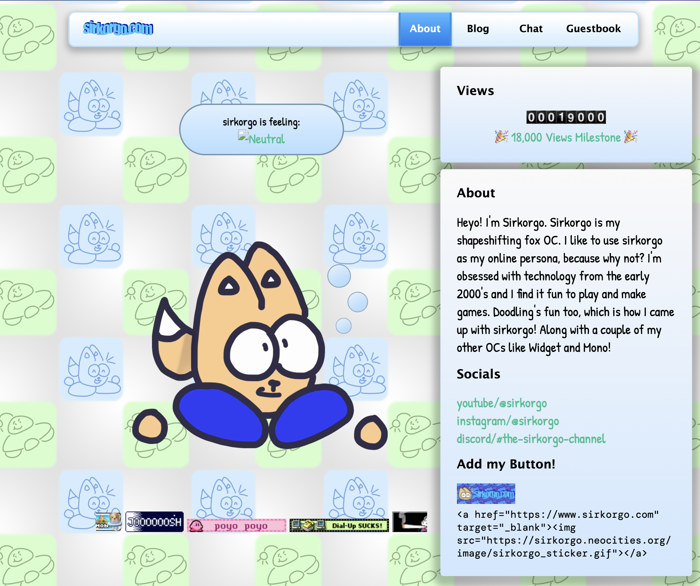

sirkorgo.com sirkorgo.com is my hobby site I use for my personal stuff (eg: a blog!) Sirkorgo is my original creation (OC) that I draw for fun! Something notable about this site is that it's my first site made in Jekyll!

Web Design Assignment #1 This site is a "autobiography" that I was assigned to make in my computer science.